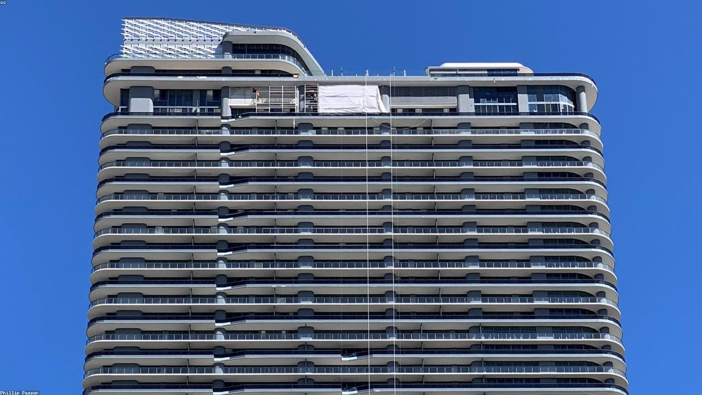

شركة ذات مسؤولية محدودة
مناسبة لعدة أنشطة مع مرونة في إدارة الشركاء والالتزامات، وفق أنظمة الشركات.
من جدة ومنطقة مكة المكرمة — نستجيب لطلبات الموقع خلال يوم عمل في أغلب الأوقات، ثم نحدّد معك نطاق العمل والتكلفة والمدة بعد استيفاء تفاصيل الخدمة والمستندات.
تنسيق التأسيس والتراخيص والمتابعة الحكومية في مسار واحد واضح.

تأسيس شركات · تراخيص · مراجعات جهات
ثلاثة مداخل مختصرة قبل استعراض قائمة الخدمات الكاملة والبحث.
صفحة مركزة لمسار التأسيس والتراخيص الأولى دون إطالة؛ للتفاصيل الشاملة لكل القطاعات راجع قسم الخدمات أدناه.
نبدأ بتحديد النشاط والشكل النظامي المناسب، ثم نرتب السجل والاسم التجاري والعنوان الوطني وفتح الملفات لدى الجهات ذات العلاقة، مع متابعة موثقة حتى تصبح المنشأة جاهزة للتشغيل وفق اشتراطات الجهات المختصة — دون وعود قطعية بموافقات تعود للجهة الرسمية وحسب استيفاء المتطلبات.
مناسبة لعدة أنشطة مع مرونة في إدارة الشركاء والالتزامات، وفق أنظمة الشركات.
عند الحاجة لهيكل مساهمات أو نمو لاحق وفق الشروط النظامية والمالية.
لبعض البدايات السريعة وفق طبيعة النشاط والاشتراطات المعتمدة.
تنسيق متطلبات الاستثمار والمركز السعودي للأعمال والملفات ذات الصلة عند الانطباق.
لا نعرض شهادات وهمية؛ نركز على أسلوب عمل يقلل الغموض ويوضح الخطوات أمام صاحب المنشأة.
جمعنا العبارات الأكثر ارتباطا بخدمات ثقة الذهبية حتى يجد الزائر الخدمة المطلوبة بسرعة، وتفهم محركات البحث نطاق العمل بدون حشو كلمات.
تأسيس شركة في جدة أو الرياض، مؤسسة فردية، شركة ذات مسؤولية محدودة، شركة مساهمة مبسطة، وتعديل عقود الشركاء.
تراخيص بلدية، تراخيص بناء، إضافة أدوار وملاحق، تراخيص بيئة، نشاط تجاري، هدم وإزالة، وتراخيص صناعية وسياحية.
مراجعة الوزارات، مدن الصناعية، المحاكم، المرور، الجوازات، الأحوال المدنية، الأمانات، البلديات، والبنوك نيابة عن العميل.
إدارة الأملاك العقارية، متابعة العقود والمستحقات، تنسيق الصيانة، إدارة المشاريع، متابعة الموردين، وتقارير الإنجاز.
تجهيز متطلبات المستثمر الأجنبي، فروع الشركات الأجنبية، وزارة الاستثمار، المركز السعودي للأعمال، وملفات المنشأة.
تأشيرات السفر للخارج، مراجعة السفارات والقنصليات، تنسيق متطلبات التعليم في الخارج، وترتيب المستندات.
مراجعة العلامات التجارية، تأسيس العلامة التجارية، التسويق للغير، وتنظيم المتطلبات والمخاطبات.
خدمات الأفراد، الأسر المنتجة، ذوي الاحتياجات الخاصة، كبار السن، الجمعيات الخيرية، والجمعيات التعاونية.
صممنا الخدمات لتغطي رحلة العميل من الفكرة الأولى وحتى جاهزية النشاط للتشغيل والمتابعة، مع دعم الأعمال والموارد البشرية وخدمات الأفراد.
استخدم البحث أو اختر تصنيفا لتقليل عدد البطاقات.
إرشاد واختيار الشكل النظامي المناسب وإكمال إجراءات التأسيس والتعديل.
متابعة التراخيص والتصاريح للأنشطة التجارية والصناعية والسياحية والعقارية.
مراجعات وتمثيل نظامي أمام الجهات ذات العلاقة نيابة عن الغير.
تجهيز المنشأة للتشغيل واستمرار الامتثال بعد إصدار السجل والرخص.
مساندة المستثمرين في فهم المتطلبات والمسارات النظامية داخل السعودية.
مراجعة أولية للبيانات والالتزامات لتقليل التعثر أثناء الإجراءات.
نقوم بتطوير ومتابعة الأعمال للشركات والمؤسسات لضمان وضوح المسار التشغيلي والإداري.
تنظيم ومتابعة الأملاك العقارية بما يحفظ بياناتها ويجعل تشغيلها ومتابعة عقودها أوضح.
متابعة المشاريع من التخطيط حتى التنفيذ عبر تنظيم المهام والجهات والمواعيد والتقارير.
نقدم خدمات الموارد البشرية للشركات والمؤسسات بما يساعد على تنظيم فرق العمل والاحتياج الوظيفي.
نقدم جميع الخدمات المناسبة للأفراد ومراجعات الجهات التي تتطلب متابعة وتنظيم معاملات.
خدمة متابعة دورية للمنشآت القائمة لتنظيم الطلبات وتحديث الملفات وتقليل التعثر.
تنظيم مسار المستثمر الأجنبي من فهم المتطلبات وحتى جاهزية الملفات الأولية.
تنظيم ملفات المنشأة التشغيلية والإدارية حتى تكون جاهزة للمراجعة والمتابعة.
تنسيق ومتابعة التعاملات مع الموردين بما يخدم احتياج المنشأة ويقلل التعثر التشغيلي.
متابعة المطالبات والمدفوعات والمخاطبات المالية مع الجهات ذات العلاقة.
مراجعة الجهات الخدمية والتشغيلية التي تحتاجها المنشآت والأفراد لاستمرار الخدمة.
متابعة المسارات العدلية والتجارية ذات العلاقة بالأعمال والمطالبات والتنفيذ.
ترتيب المتطلبات والمراجعات المرتبطة بقطاعات الصحة والحج والجهات ذات العلاقة.
متابعة ملفات العلامات التجارية وخدمات التسويق للغير بما يخدم نشاط المنشأة.
متابعة الجهات المرتبطة بالمنافذ والالتزامات المالية والتنظيمية للمنشآت.
مراجعة الجهات المرتبطة بالنقل والمواصلات والتصاريح التشغيلية ذات العلاقة.
مراجعة الجهات المرتبطة بالإعلام والترفيه وتنظيم الفعاليات والمعارض.
متابعة الطلبات المرتبطة بالأنشطة الصناعية والثروة المعدنية والتراخيص ذات العلاقة.
تنسيق ومتابعة طلبات الأسر المنتجة مع الجهات الداعمة ومقدمي الخدمات.
متابعة وتنسيق الطلبات والخدمات المساندة لذوي الاحتياجات الخاصة باحترام ووضوح.
مساندة كبار السن في متابعة المعاملات والتنسيق مع مقدمي الخدمات والرعاية.
متابعة وتنظيم الطلبات المرتبطة بالجمعيات التعاونية والخيرية والجهات الداعمة.
السعي في المقايضات التجارية والتسويات بما يساعد الأطراف على ترتيب الحلول الودية.
مساندة الطلاب وأولياء الأمور في تنسيق متطلبات الدراسة والتعليم خارج المملكة.
مراجعة ومتابعة متطلبات استخراج تأشيرات السفر للخارج حسب الجهة والدولة المطلوبة.
رتبنا الخدمات في مجموعات تجارية واضحة حتى يختار العميل نوع الطلب بسرعة، ثم يرسل التفاصيل عبر النموذج أو الشات بوت.
تأسيس كيانات جديدة، تعديل عقود وبيانات الشركاء، إضافة أنشطة، وفروع الشركات الأجنبية.
اطلب هذه المجموعةتراخيص البناء، الهدم، النشاط التجاري، الاشتراطات، الأمانات، والبلديات الفرعية.
اطلب هذه المجموعةالوزارات، الأحوال، الجوازات، المرور، المحكمة التجارية، ومحكمة التنفيذ.
اطلب هذه المجموعةوزارة المالية، البنك المركزي، شركات التمويل، شركات التأمين، ومتابعة المستخلصات.
اطلب هذه المجموعةشركة الكهرباء، المياه، الاتصالات، الموردين، المخاطبات، وملفات التشغيل.
اطلب هذه المجموعةالمعاملات الشخصية، المراجعات الحكومية، المعاملات العدلية، ومتابعة الطلبات.
اطلب هذه المجموعةالعلامات التجارية، تأسيس العلامات، التسويق للغير، وترتيب المخاطبات.
اطلب هذه المجموعةالميناء، الجمارك، الزكاة والضريبة، ووزارة النقل والخدمات اللوجستية.
اطلب هذه المجموعةوزارة الإعلام، هيئة الترفيه، الفعاليات والمعارض، وزارة الصناعة والثروة المعدنية، ومراجعة مدن الصناعية.
اطلب هذه المجموعةالأسر المنتجة، ذوي الاحتياجات الخاصة، كبار السن، والجمعيات الخيرية والتعاونية.
اطلب هذه المجموعةالتعليم في الخارج، تنسيق متطلبات القبول، مراجعة السفارات والقنصليات، وتأشيرات السفر للخارج.
اطلب هذه المجموعةالسعي في المقايضات التجارية والتسويات الودية وتنسيق الأطراف.
اطلب هذه المجموعةرفعنا تجربة الموقع لتكون أقرب لطريقة عمل مكتب خدمات محترف: وضوح في الخيارات، مسار متابعة مختصر، ورسائل واتساب جاهزة المصدر.
نوضح للعميل المعلومات الأساسية قبل بدء الطلب حتى تقل المراجعات غير المكتملة.
نرتب الطلبات حسب الخدمة والمدينة والجهة المطلوبة لتسهيل التواصل والتنفيذ.
نتعامل مع بيانات العملاء ومستنداتهم بعناية ونطلب فقط ما يخدم مسار الخدمة.
يمكن إضافة خدمات وباقات جديدة بسرعة مع المحافظة على تجربة استخدام بسيطة.
الباقات تساعد الزائر على فهم نطاق الخدمة بسرعة، ثم إرسال طلب واضح عبر واتساب لاستكمال التفاصيل.
للشركات والمؤسسات الجديدة، وتشمل تحديد الكيان وتجهيز المتطلبات الأساسية.
للمنشآت القائمة التي تحتاج متابعة ملفاتها ورخصها ومراجعات الجهات.
للخدمات الشخصية والمعاملات الإدارية والعدلية ومراجعات الجهات.
نرتب الخدمة حسب طبيعة النشاط والجهة المطلوبة حتى تكون الرسالة أوضح من أول تواصل.
تراخيص بناء، إضافة أدوار، ملاحق، هدم وإزالة، ومتابعة اشتراطات.
فتح النشاط التجاري، رخص بلدية، سجلات، وتعديل الأنشطة.
تراخيص صناعية، محطات وقود، صناديق تمويل، وملفات تشغيل.
تراخيص سياحية، تنسيق متطلبات، ومراجعة الجهات ذات العلاقة.
نوضح مسار المراجعة ونجهز المعلومات الأساسية قبل التواصل مع الجهات المطلوبة.
وزارة المالية، وزارة الصحة، وزارة التجارة، وزارة الحج، وزارة الاستثمار، وزارة الإعلام، ووزارة العمل.
مصلحة التقاعد، الضمان الاجتماعي، الأحوال المدنية، الجوازات، والمرور.
الأمانات، البلديات الفرعية، مصلحة المياه، شركة الكهرباء، وشركات الاتصالات.
المحكمة التجارية، محكمة التنفيذ، المحاكم العامة، وكتابات العدل.
البنك المركزي، البنوك، شركات التمويل، شركات التأمين، والصناديق التنموية والتمويلية.
المركز السعودي للأعمال، بلدي، السجلات والأنشطة، وتعديل بيانات المنشأة.
التنسيق مع الموردين، متابعة عروض الأسعار، وتنظيم المخاطبات التشغيلية.
متطلبات وزارة الصحة، وزارة الحج، الأنشطة الصحية، والسياحة والضيافة.
هيئة الزكاة والضريبة والجمارك، الجمارك، الميناء، والمنافذ ذات العلاقة.
وزارة النقل والخدمات اللوجستية، وزارة المواصلات، والتصاريح التشغيلية.
وزارة الإعلام، هيئة الترفيه، تصاريح الفعاليات والمعارض، والمتطلبات المرتبطة بها.
وزارة الصناعة والثروة المعدنية، مدن الصناعية، الأنشطة الصناعية، والتراخيص التشغيلية ذات العلاقة.
العلامات التجارية، تأسيس العلامات، التسويق للغير، والمتطلبات المرتبطة بها.
الجمعيات التعاونية والخيرية، الأسر المنتجة، خدمات كبار السن، وذوو الاحتياجات الخاصة.
خدمات التعليم في الخارج، تنسيق القبول، مراجعة السفارات والقنصليات، ومتطلبات تأشيرات السفر للخارج.
نعمل كحلقة وصل منظمة بين العميل والجهات ذات العلاقة. هدفنا أن يعرف صاحب المشروع ماذا يحتاج، لماذا يحتاجه، ومتى يكتمل، بدون تشتيت بين المتطلبات والمنصات المختلفة.
يعرض هذا القسم نبذة مختصرة عن خبرة د. طلال بن حسن الزهراني، مع التركيز على الاستثمار، الإدارة المالية، تطوير الأعمال، وعلاقات الأعمال الدولية.
رئيس مجلس إدارة صندوق الاستثمار الدولي منذ مايو 2023، مع نشاط في إدارة الاستثمارات وبناء الشراكات والصفقات الدولية.
قدم خدمات مالية لجهات وشركات عديدة، مع خبرة معلنة في إدارة المخاطر والأزمات والأسواق المحلية والعالمية.
تولى رئاسة وقيادة شركات في الخدمات المالية، المباني الذكية، الإعلام، الخدمات البترولية، والصناعات التحويلية.
خبرة في تأسيس كيانات أعمال وتطوير مشاريع في قطاعات متنوعة تشمل الاستثمار، التجارة، الصناعة، والإنتاج الإعلامي.
بكالوريوس محاسبة، ماجستير في إدارة المخاطر والأزمات، ودكتوراه في محاسبة التكاليف والهندسة والتخطيط المالي.
يعرض الملف خبرة في إدارة العلاقات الدولية وإغلاق الصفقات، مع إجادة عدة لغات ومهارات في صناعة الأسواق.
استخدمنا صور المباني والمشاريع فقط لإظهار الجدية والارتباط ببيئة الأعمال والتطوير، مع حذف الصور الشخصية من الصفحة.
نبدأ بفهم النشاط ثم نرتب المتطلبات وننفذ الإجراءات وفق خطة مختصرة قابلة للمتابعة.
نراجع نوع النشاط والمدينة والشكل النظامي المناسب.
نحدد المستندات والبيانات المطلوبة قبل بدء الطلبات.
نتابع الإجراءات ونرسل تحديثات حالة مختصرة وواضحة.
نسلم المستندات ونوضح الخطوات التالية بعد التأسيس.
طلب إلكتروني أو واتساب → تواصل واستكمال بيانات → تجهيز الملفات وفق اشتراطات الجهة → متابعة حتى الإصدار أو الخطوة التالية.
النموذج أو واتساب مع نوع الخدمة والمدينة وبيانات التواصل.
نحدد المستندات المتوفرة والمسار المناسب قبل أي صرف أو طلب رسمي حيث ينطبق.
ترتيب الملفات والاستيفاء وفق اشتراطات الجهة المعنية.
متابعة الطلب حتى صدور النتيجة أو التجديد أو طلب الملحقات.
نعم، نبدأ بتحليل النشاط ونقترح الشكل الأنسب قبل تنفيذ أي إجراء.
يمكن متابعة الرخص والملفات المرتبطة حسب النشاط والمدينة والاشتراطات المطلوبة.
بعد معرفة نوع الخدمة والمدينة والمستندات المتوفرة، نبيّن مدى زمنياً واقعياً ونفصّل أتعاب التنسيق مقابل رسوم الجهات حيث تنطبق.
يعتمد على الجهة والخدمة؛ نعمل على تقليل الزيارات غير الضرورية وترتيب ما يمكن إنجازه بعد استيفاء البيانات والمواعيد.
لا يوجد رقم واحد يناسب كل الحالات؛ يختلف حسب الشكل النظامي والنشاط والجهات، ونوضّح التوقعات بعد مراجعة طلبك والمستندات الأولية.
نعم، نساعد في ترتيب المتطلبات الأولية وتحديد المسار المناسب للشركات الأجنبية وملفات الاستثمار.
نعم، يمكن طلب متابعة شهرية تشمل الرخص والتجديدات وطلبات الجهات وتقرير حالة مختصر.
يجمع الطلب في صيغة واضحة ويرسله عبر واتساب أو البريد مع توضيح أنه طلب من الموقع.
واتساب يتطلب ضغط العميل على زر الإرسال، لذلك أضفنا خيار البريد الإلكتروني كمسار احتياطي.
عند فتح واتساب أو البريد ستجد الرسالة جاهزة للمراجعة؛ بعد ضغط الإرسال نستلمها على الرقم أو البريد الرسمي.
الخدمات إدارية وتنسيقية مع الجهات؛ أي قرار نظامي نهائي يصدر من الجهة المختصة وفق أنظمتها.
يطلب الموقع معلومات مختصرة مثل نوع الخدمة والمدينة وبيانات التواصل لغرض ترتيب الطلب فقط.
لا يتم طلب مستندات حساسة داخل الشات بوت، ويمكن استكمال التفاصيل عبر واتساب أو البريد الرسمي.
روابط المواقع الحكومية والجهات الرسمية في بطاقات الخدمات للاطلاع العام فقط. لا يتحكم المكتب بمحتوى تلك المواقع أو تحديثاتها، والرابط لا يعد توصية من الجهة تجاه المكتب.
النموذج يجهز رسالة واضحة المصدر للواتساب أو البريد، حتى لا تضيع تفاصيل الطلب.
لا تضع مستندات أو بيانات حساسة داخل النموذج. سنطلب المتطلبات الرسمية بعد التواصل.
سواء كنت تؤسس شركة جديدة أو تحتاج متابعة ملفات منشأة قائمة، سنحول المتطلبات إلى خطوات واضحة قابلة للتنفيذ.
تنفيذ أي خدمة يعتمد على اكتمال المتطلبات وقبول الجهة الرسمية المختصة. لا يعد عرض الخدمة ضمانا للموافقة النهائية من الجهات.